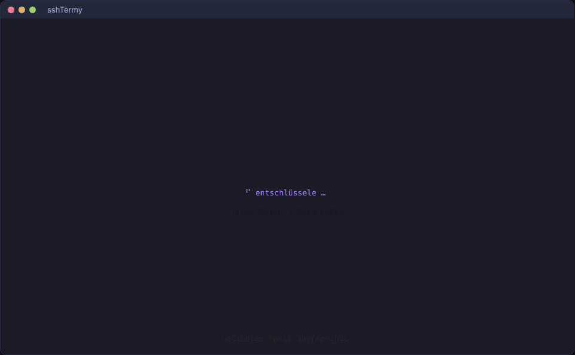
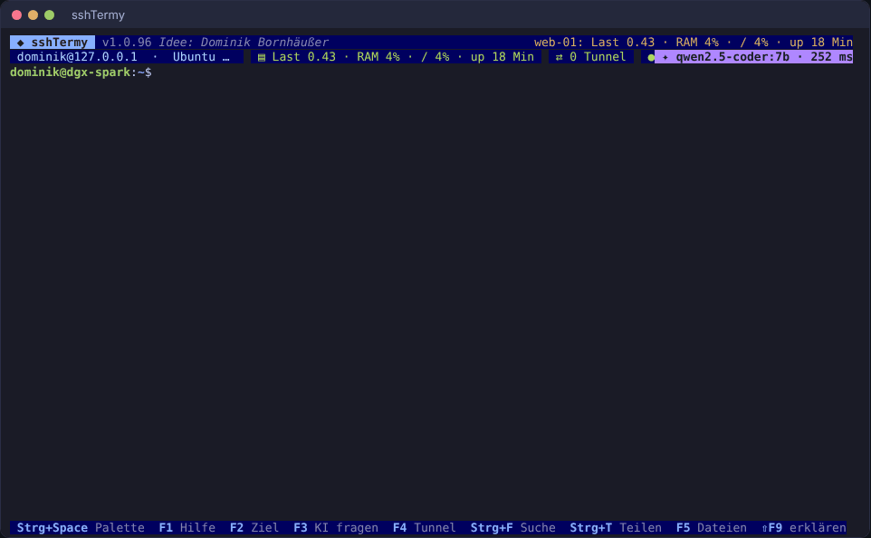

Das SSH-Terminal,
das mitdenkt.
Verbindungen, Dateien und Tunnel in einem kleinen Programm, dazu eine KI, die Befehle vorschlägt und Fehler erklärt. Gefährliches wartet immer auf dich.
winget install db9979.sshTermy
brew tap db9979/sshtermy https://github.com/db9979/sshtermy brew install sshtermy
echo "deb [trusted=yes] https://db9979.github.io/sshtermy/apt ./" | sudo tee /etc/apt/sources.list.d/sshtermy.list sudo apt update && sudo apt install sshtermy
Oder die Datei direkt laden, danach sshtermy starten. Alle Wege
Idee: Dominik Bornhäußer · kostenlos · MIT-Lizenz

Was sshTermy kann
Sechs Bereiche, ein Programm. „Mehr“ zeigt alle Einzelheiten.
Verbinden & arbeiten
Alle Server an einem Ort, ein echtes Terminal.
- Verbindungsmanager mit Ordnern, Tags und Jump-Hosts, Import aus
~/.ssh/config, PuTTY, MobaXterm - Tabs und geteilte Ansicht mit bis zu sechs Sitzungen
- SSH, Telnet, serielle Konsole, PowerShell über WinRM, lokale Shell
- Verbindet sich nach WLAN- oder VPN-Abbruch von selbst neu
KI-Copilot
Schlägt vor, erklärt, erledigt. Du entscheidest.
- Ghost-Text und passende Folgebefehle beim Tippen
- Befehl fehlgeschlagen? Alt+0 nennt Ursache und Lösung
- Ziel-Modus: ein Befehl nach dem anderen, oder als Agent selbstständig
- Jede OpenAI-kompatible KI, Claude, lokal, offline oder ganz ohne
Sicherheit
Gefährliches wartet immer auf dich.
- Feste Gefahr-Regeln, auch beim Einfügen
- Jede Verbindung gilt als produktiv: rote PROD-Marke
- Verschlüsselter Speicher (AES-256, Argon2id) und Bildschirmsperre
- Signiertes Audit-Protokoll, KI-Datenschutz je Verbindung
Switches & Netzwerk
Für Netzwerker gemacht.
- 48 Befehlssätze: Cisco, Aruba, Juniper, MikroTik, UniFi und mehr
- Gerät finden: MAC oder IP rein, Switch, Port und VLAN raus
- Topologie aus LLDP/CDP, Konfig-Sicherung nach Zeitplan
- Broadcast: ein Befehl auf alle Geräte einer Gruppe
Server pflegen
Sehen, was los ist, und es beheben.
- Host-Übersicht mit CPU, RAM, Platten und Live-Kurven
- Log-Blick und Logwache mit KI-Diagnose
- Sicherheitslücken (OSV), Härtungs-Check, Patch-Runde
- Dateien per SFTP wie im Dateimanager, Tunnel per Klick
Team & unterwegs
Überall gleich eingerichtet.
- Ende-zu-Ende-verschlüsselter Sync über OneDrive, Dropbox, iCloud, WebDAV
- Team-Ordner halten die Verbindungen aller aktuell
- Sitzung live teilen per Kurzcode, Zusehen im Browser
- Umzug auf einen neuen Rechner mit einer Datei
Alle 68 Funktionen im Detail
>_ Verbinden & arbeiten
Verbindungsmanager
Ordner, Tags, Jump-Hosts, Import aus ~/.ssh/config, PuTTY und MobaXterm.
Fehlerverzeihend
Beenden fragt bei offenen Verbindungen nach, Löschen lässt sich 10 Sekunden lang rückgängig machen, Strg+T im Formular testet die Verbindung vor dem Speichern, und fehlgeschlagene Verbindungen erklären in Klartext, was los ist (mit Taste zum Beheben, z. B. neuen Host-Key nach Neuinstallation übernehmen). Der einfache Modus blendet Profi-Funktionen aus.
Läuft weiter
Ein Fehler an einer Stelle (eine seltsame KI-Antwort, ungewöhnliche Geräteausgabe, die Dateiansicht) reißt sshTermy nicht mehr samt allen Verbindungen mit: Er wird abgefangen, ein bereinigter Bericht entsteht, und eine Meldung erscheint. sshtermy doctor oder Hilfe › Fehlersuche › „Selbstprüfung“ prüft Ordner, Tresor, Schlüsselbund, SSH-Agent, Internet, Uhr und KI auf einen Blick.
Eigenes Fenster
Kein Terminal nötig: Doppelklick auf die .exe, die .app öffnen oder sshtermy -window. Schrift, Nerd-Font-Symbole und Emoji sind eingebaut, jede Taste kommt an (Alt+⏎, ⇧F-Tasten, Strg+Leertaste), Bilder erscheinen pixelgenau, abgelegte Dateien werden hochgeladen, ⇧F10 öffnet ein zweites Fenster, das den Verlauf mitnimmt und mit Mausrad oder ⇧+Bild↑ blättert. Startet im Vollbild (F11 schaltet um; maximiert oder „wie zuletzt“ in den Einstellungen), Schriftgröße und Fensterposition werden gemerkt. Im Terminal gestartet läuft es wie bisher im Terminal.
Wer auf dich wartet
Ein Tab, der auf ein Passwort, eine [j/N]-Frage oder im Pager wartet, bekommt ein ?; Alt+G springt hin. KI-Coding-Agenten im Tab (Claude Code, Codex, Gemini CLI und mehr) werden erkannt: arbeitet, wartet auf deine Freigabe (◆ plus Desktop-Meldung) oder fertig. Ein Klick auf die Desktop-Meldung öffnet den richtigen Tab.
Sitzungen laufen weiter
Mit dem Hintergrunddienst überleben Sitzungen das Schließen des Terminalfensters; sshtermy hängt sich wieder an, Strg+Q → a koppelt ab. Beim Start bietet sshTermy an, die Tabs und die geteilte Ansicht vom letzten Mal wieder zu öffnen.
Panels, wo du sie willst
Das Seitenpanel steht rechts, links oder unten, den Rand ziehst du mit der Maus breiter. In breiten Fenstern stehen F5 und der Log-Blick neben dem Terminal, du tippst weiter, während du Dateien ansiehst. In der geteilten Ansicht zeigt jeder Bereich Ordner, letzten Befehl und Last.
Weniger tippen, schneller finden
Der Ghost-Text schlägt zuerst Befehle aus deinem Verlauf vor, sofort und ohne KI. Alt+Y zeigt, was du zuletzt kopiert hast, und fügt es wieder ein. Rechtsklick auf eine Markierung sucht eine Fehlermeldung im Web, F5 öffnet im Ordner, in dem du gerade bist, und der KI-Status zeigt Tokens und Kosten für heute, 7 und 30 Tage.
Tastatur & Kopfzeile
Alt+C markiert per Tastatur (v, V Zeilen, y kopiert), Alt+X leert Bildschirm und Verlauf, deine Eingabe bleibt. Die Kopfzeile zeigt auf Wunsch die Uhrzeit oder die Ausgabe eines eigenen Befehls (Git-Zweig, Akku …). KI-Clients können per MCP Tabs öffnen, tippen und warten, mit deiner Bestätigung.
Befehle als Blöcke
Alt+Bild↑/Bild↓ springt im Verlauf von Befehl zu Befehl. Alt+O listet die Befehle des Tabs mit Uhrzeit, Dauer und Ergebnis: genau eine Ausgabe kopieren, an die KI geben oder groß lesen.
Echtes Terminal
xterm-256color, Truecolor, vim, htop und tmux, Verlauf zum Zurückblättern (Mausrad oder ⇧+Bild↑), Tabs, geteilte Ansicht, Suche.
Auto-Reconnect
Reißt WLAN oder VPN ab, kommt die Sitzung von selbst zurück, mit Tunneln und tmux/screen. Nach Ruhezustand oder Netzwechsel wird jede Leitung binnen Sekunden geprüft.
Farbregeln
Fehler rot, Warnungen gelb, IP blau, MAC lila, Switch-Syslog nach Schwere; eigene Regeln, mit ! meldet sich ein verdeckter Tab.
Bilder im Terminal
Sixel, kitty-Grafik und iTerm2-Bilder (img2sixel, icat, viu, imgcat) als farbige Halbblöcke, in jedem Terminal; in kitty, Ghostty und im eigenen Fenster pixelgenau.
Geteilte Ansicht & Tabs
Sieben Aufteilungen mit bis zu sechs Sitzungen, Zoom, Tauschen, Eingabe an alle; Tab-Leiste mit + (öffnet den Verbindungs-Manager, die gewählte Verbindung startet in einem zusätzlichen Tab), ×, Rechtsklick-Menü und Tab-Liste (Alt+T); Tabs mit der Maus ziehen, Alt+S sucht in allen Tabs. Jeder Tab bekommt einen farbigen Rahmen, sein Name dieselbe Farbe; Rot nur für produktiv. Aktiver Tab und Bereich sind in ihrer Farbe gefüllt und mit ▶ markiert.
Sammeländerung
Im Manager mehrere Verbindungen markieren (Leertaste, * für alle Treffer) und in einem Schritt Tags, Benutzer, Schutz oder Farbe ändern, verschieben oder löschen.
Notiz, Startbefehl, Wake-on-LAN
Je Verbindung eine Notiz nur für dich, ein Befehl, der nach dem Anmelden getippt wird, und Aufwecken ausgeschalteter Rechner; die MAC-Adresse merkt sich sshTermy selbst.
Telnet & Konsole
Telnet und USB-Konsolenkabel (z. B. Aruba-Switches), Kabel wird automatisch gewählt, Anmeldung getippt.
PowerShell-Fernzugriff
Auf Windows-Server einloggen wie mit Enter-PSSession über WinRM (NTLM oder Kerberos, verschlüsselt, oder HTTPS), mit Verlauf, Tab-Ergänzung vom Server und KI, die PowerShell spricht.
Lokale Shell
Deine eigene PowerShell, cmd, zsh oder bash als Tab (Alt+L), mit KI, Agent- und Plan-Modus, geteilter Ansicht und Protokoll; der Gefahren-Check gilt auch hier.
Profi-SSH
Agent-Weiterleitung, X11-Weiterleitung, FIDO2-Sicherheitsschlüssel, Kerberos/GSSAPI, SSH-Zertifikate, feste tmux/screen-Sitzungen. Quantensicherer Schlüsseltausch (ML-KEM), wo der Server ihn kann, und ein deutlicher Hinweis, wenn ein altes Gerät nur SHA-1/CBC spricht.
Aussehen & Tasten
26 Themes mit Live-Vorschau, von Polarnacht, Abendrot und Tusche bis Papier und Minze, dazu Hochkontrast und Farbenblind, eigene Farben, vier Symbol-Stile, jede Taste frei belegbar. Serverausgabe bleibt in jedem Theme lesbar: Farben von Programmen, die das Theme nicht kennen, werden auf guten Kontrast angehoben.
Aufgeräumter Bildschirm
Eine Kopfzeile mit Tabs links und dem Zustand der Sitzung rechts, rote Marke ▲ PRODUKTIV statt roter Fläche, unten eine F-Tasten-Leiste (1Hilfe 2Ziel 3KI …). Der Manager zeigt rechts nur, was zur Auswahl gehört, ein Ordner seinen Inhalt mit Status. Die Hilfe (F1) hat Reiter, tippen filtert.
Lebendige Oberfläche
Verbindungsaufbau als Karte mit Schritten und Lichtlauf (was du dabei tippst, wartet auf den Prompt), Tabs leuchten bei Erfolg und Fehler auf, Karte beim Überfahren eines Tabs, atmende Online-Punkte (geprüft wird nur, was sichtbar ist) und Lastbalken, KI-Antwort tippt sich, Palette mit leuchtenden Treffern, Latenzkurve in der Kopfzeile, gleitender Rahmen in der geteilten Ansicht, Dialoge mit Schatten und wahlweise runden Ecken. Voll, dezent oder aus.
Barrierearm & Support
Barrierearmer Modus ohne Animationen, mit Formen statt nur Farben. Debug-Protokoll für Fehlerberichte (--debug), bereinigt von Hosts, IPs und Passwörtern. Adaptive Bildrate bei Ausgabeflut, dazu eine Leistungsanzeige in der Palette, die die Zeichenzeit in Worten bewertet.
✦ KI-Copilot
Ziel-Modus im Einsatz
? gibt der KI mitten im Ziel eine Anweisung, ⇧S überspringt einen Schritt mit Grund. Fragt ein Befehl [Y/n] oder wartet ein Pager, zeigt das Panel Antwort-Knöpfe. Dateien, die ein Schritt ändert, werden vorher gesichert, u holt alle zurück; f startet ein Folgeziel, frühere Ziele stehen im Verlauf. Nach einem Verbindungsabbruch setzt ⏎ fort, und der Tab zeigt, wenn ein Ziel auf dich wartet.
Aufgaben, Diff und Gegenprüfung
Offene Arbeiten je Verbindung oder Ordner mit Fälligkeit (u im Manager, Alt+A): ⏎ startet eine Aufgabe als Ziel, danach steht sie zur Abnahme. Nach jedem Ziel prüft eine zweite KI nur lesend nach, ob es wirklich erreicht ist, und d zeigt jede geänderte Datei als Diff.
KI-Befehle auf dem Host geprüft
Bevor ein Befehl aus einer Karte eingefügt oder ausgeführt wird, fragt sshTermy beim echten Host nach, ob es das Programm gibt und jede Option in dessen man-Seite oder --help steht. macOS-Formen unter Linux, der falsche Paketmanager und alles, was die Frage ausschließt („ohne lsof“), fallen auf, bekannte Ausrutscher werden repariert (grep auf einen Ordner bekommt -r). Was offen bleibt, ist als unbestätigt markiert und die KI versucht es noch einmal. Idee aus lxask.
Satz → Befehl, erklären ohne KI
Am Prompt in eigenen Worten tippen, was du willst, Strg+G macht daraus einen geprüften Befehl. Alt+H erklärt den getippten oder letzten Befehl Teil für Teil aus der man-Seite des Hosts, offline und ganz ohne KI.
Kleine Offline-KI, oder gar keine
Keine KI? Dann sind alle KI-Funktionen ausgeblendet, Prüfen und Erklären gehen trotzdem. Ein Knopf lädt eine kleine Offline-KI herunter (lxask-Modell über llama.cpp, etwa 1 GB, Windows, macOS, Linux, jede Datei mit SHA-256 geprüft), die einspringt, wenn sonst keine antwortet; Ziel-, Agent- und Plan-Modus bleiben ausgeblendet, bis eine größere KI angebunden ist.
KI-Begleiter
Liest mit und kommentiert von selbst: leise (Fehler, riskante Zeilen vor Enter, Wiederholungen), gesprächig (jeder Befehl) oder Coach (erkennt dein Ziel, Rückblick mit Runbook). Eigene KI-Server, auch extern, lassen sich eintragen. Schlägt ein Befehl aus einer Antwortkarte fehl, zeigt die Karte den Fehler und einen korrigierten Befehl; u übernimmt ihn und korrigiert denselben Fehler in den anderen Karten mit.
Vorgang über Fenster
Alt+V verbindet die Fenster einer Arbeit (Webserver, Datenbank, Switch). Die KI sieht alle und sagt bei jedem Schritt, in welches Fenster er gehört; Fahrplan Fenster für Fenster mit übernommenen Werten, Plan in Bahnen, Rückblick als Change-Protokoll. Vor dem Vortippen prüft sshTermy das Zielfenster (Host-Key, Prompt, System) und fügt nichts ein, wenn es nicht passt.
Agent- & Plan-Modus
Die KI arbeitet selbstständig aufs Ziel hin, legt Skripte an und führt sie aus; drei Stufen, gefährliche Schritte warten immer auf dich. Erst planen: den ganzen Plan prüfen und freigeben.
! Sicherheit
Passwortmanager
Passwörter und 2FA-Codes aus 1Password, Bitwarden, KeePassXC oder pass; gespeichert wird nur der Verweis.
Gefahr-Regeln
Feste Regeln markieren riskante Befehle rot; sie brauchen zweimal Enter, auch beim Einfügen. Jede Verbindung gilt als produktiv: Enter gedrückt halten, bis der Balken voll ist. Den Schutz nur einzeln abschalten, für Test- und Laborsysteme. Es gelten immer alle Regelgruppen, ein falsch erkannter Switch versteckt kein erase.
Bildschirmsperre
Sofort sperren oder nach 5 bis 60 Minuten Leerlauf; Sitzungen laufen hinter der Sperre weiter. Master-Passwort und Windows-Anmeldung jederzeit änderbar.
Audit-Protokoll
Wer hat wann wo was getan: Verbindungen, Befehle, Übertragungen, Config-Sicherungen. Signiert und verkettet, geänderte oder gelöschte Zeilen fallen auf.
KI-Datenschutz
Alle Anbieter, nur lokale KI im eigenen Netz oder gar keine KI, global oder pro Verbindung per Tag. Genau sehen, was zuletzt hinausging.
⇄ Switches & Netzwerk
Broadcast
Ein Befehl oder Runbook parallel auf einer ganzen Gruppe, je Host eine Kachel: grün wenn fertig, rot bei Fehler, pulsierend solange er läuft. Änderungen laufen erst auf einem Host als Probelauf und stoppen nach 3 Fehlern.
Gerät finden
MAC oder IP rein, Switch, Port und VLAN raus: sshTermy liest MAC-, ARP- und LLDP-Tabellen aller Switches, oder nur die eines Ordners, wenn du mehrere Netze betreust.
Netzwerk-Topologie
LLDP/CDP-Nachbarn werden zum Bild mit Kästen, Linien und Ports, dazu ein Mermaid-Diagramm; Config-Regeln prüfen jede Sicherung.
Zeitpläne
Broadcast oder Runbook zu einer Uhrzeit auf einem Ordner, z. B. nachts show running-config auf allen Switches. Neue Hosts im Ordner laufen erst nach deiner Bestätigung mit.
Netzwerk-Scan
SSH-Geräte in einem Subnetz finden und als Verbindungen anlegen.
Systemprofil
Kennt Linux-Distributionen, macOS, Windows und Netzwerk-Dialekte (Aruba, Cisco, Juniper, MikroTik, FortiGate, UniFi …), damit die KI passende Befehle vorschlägt.
Befehlssätze
48 Befehlssätze eingebaut (Cisco, Arista, Aruba, Comware, Huawei, Dell, Extreme, Ruckus, Palo Alto, Sophos, FortiGate, pfSense, Proxmox …). Eigene als YAML ergänzen, am Gerät testen oder von der KI entwerfen lassen, per Sync auf allen Rechnern; eigene und Team-Sätze können die eingebauten Sicherheitsregeln nie abschwächen.
◎ Server pflegen
Dateien (F5)
SFTP über dieselbe Verbindung: links lokal, rechts der Server. e öffnet eine Server-Datei in VS Code, Notepad++ oder TextEdit, Speichern lädt sie zurück. Beim Kopieren: Prozent, MB/s, Restzeit und Tempo-Kurve. „Permission denied“? sshTermy bietet an, mit sudo zu wiederholen (j zweimal).
Dateien wie im Dateimanager
In F5: d legt in den Papierkorb, Strg+Z holt zurück. z/u packt und entpackt direkt auf dem Server, / findet Dateien unscharf im ganzen Ordnerbaum, i zeigt die Platzfresser, ⇧I doppelte Dateien. g öffnet Orte mit gemerkten Ordnern und Laufwerken, x/p verschiebt, ⇧F2 benennt viele Dateien im eigenen Editor um. Die Vorschau zeigt Ordner, Archive, Bildgrößen, Markdown und CSV als Tabelle.
Dateien mit der Maus
Doppelklick auf eine Datei zeigt sie direkt in sshTermy: Farben, Suche, markieren und kopieren, mitlesen wie tail -f. Bilder und PDFs öffnen sich mit dem Standardprogramm. Ein Einfachklick zeigt eine Vorschau, Rechtsklick ein Menü mit Umbenennen, Rechten, Pfad kopieren und cd hierhin. Klickbarer Pfad, sortierbare Spalten, Strg/Umschalt+Klick markiert. Programme vom Server fragen vor dem Start.
Alles mit der Maus
Jedes Menü öffnet und schließt per Klick: Esc bleibt in der Fußzeile klickbar, das Mausrad blättert in allen Listen und Ergebnisfenstern, die Zurück-Taste der Maus wirkt wie Esc, Rechtsklick ins Leere führt eine Ebene zurück, in der Hilfe wechseln Reiter per Klick. Im Manager bietet ein Rechtsklick auf die freie Fläche neue Verbindung, neuen Ordner, Import, Scan und Tag-Filter.
Container
Docker, Podman und Kubernetes-Pods in einer Liste: Shell im Container, Logs live, KI-Auswertung der Logs.
Host-Übersicht (F6)
CPU, Last, RAM, alle Platten und Updates bei Servern, Live-Graphen aus Braille-Punkten über 5 min oder 1 h mit Top-Prozessen; Firmware, Ports und VLANs bei über 35 Switch-, Router- und Firewall-Systemen, mit Konfig-Sicherung und Diff.
Tunnel
-L, -R, -D (SOCKS5) und Webdienste mit einem Klick.
docker exec ohne -it
docker exec gitea vi app.ini endete ohne Terminal sofort. Beim Enter ergänzt sshTermy das fehlende -it (auch podman, docker run, kubectl exec); das nächste Enter führt aus.
Sitzungsprotokoll
Verschlüsselt, durchsuchbar, mit KI-Zusammenfassung, Markdown-Export und KI-Änderungsbericht (b) für Ticket oder Doku. Ein Aktivitätskalender zeigt, an welchen Tagen und zu welcher Uhrzeit gearbeitet wurde.
KI-Logdiagnose
Markierung oder die letzten 400 Zeilen (journalctl, show logging): Lage, Auffälliges mit Zeitpunkt, Ursache, Prüfbefehle.
Log-Blick
Alt+E liest die Logs des Systems, auf dem du gerade bist (Linux, Windows, Switches, Firewalls), nur lesend, und zeigt Muster statt Zeilen: was seit dem letzten Blick neu ist, eine Zeitleiste mit Neustarts, Updates und deinen Befehlen, Rauschen pro Host oder Ordner ausblenden und ein KI-Lagebericht nur aus den verdichteten Mustern.
Logwache & Ordner-Scan
Folgt im Hintergrund den Logs offener Tabs und meldet nur neue oder kritische Muster; empfängt Syslog von Switches und Firewalls. Der Ordner-Scan prüft alle Hosts eines Ordners auf einmal (auch nachts als Zeitplan) und zeigt, was mehrere gemeinsam haben. s im Log-Blick eines Switches richtet Syslog an sshTermy ein. Syslog von Absendern ohne gespeicherte Verbindung wird verworfen.
Sicherheitscheck (OSV)
F6 → s gleicht die installierten Pakete eines Linux-Servers (und seiner laufenden Container) mit der öffentlichen OSV-Datenbank ab. Zeigt nur, was zählt: Bewertung, Reparatur vorhanden, aktiv ausgenutzt (CISA KEV), von einem Dienst mit offenem Port genutzt. u fügt den Update-Befehl ein, k lässt die KI erklären. Online oder ganz offline, für einen ganzen Ordner oder wöchentlich als Zeitplan. Den Rechner verlassen nur Paketnamen und Versionen.
Firmware-Hinweise & Patch-Runde
F6 → s am Switch oder an der Firewall prüft die Firmware gegen die NVD (FortiOS, Cisco, Junos, RouterOS, Aruba, PAN-OS …): aktiv ausgenutzt, behoben ab welcher Version. Die Patch-Runde spielt Updates gestaffelt über einen Ordner ein: erst ein Host, nach w der Rest, mit Vergleich von Diensten, Ports und Logs vorher/nachher und Neustarts einzeln.
Härtungs-Check & Schlüssel-Inventar
F6 → h prüft einen Server nur lesend: root- und Passwort-Login, Firewall, Ports offen für alle (Redis, Docker-API …), automatische Updates, ablaufende TLS-Zertifikate, mit Vorschlag je Punkt. F6 → a oder die Palette zeigt, welche SSH-Schlüssel in welchen authorized_keys eines Ordners stehen, und entfernt den Schlüssel eines ausgeschiedenen Kollegen Host für Host, mit Sicherungskopie.
Inventar, Änderungen & Platten-Vorwarnung
F6 → i erfasst Pakete, Benutzer, Admins, Cron, lauschende Ports, Dienste und Kernel, nur lesend, und zeigt, was sich seit dem letzten Mal geändert hat: ein neuer Admin oder Port steht oben. Ordner-Lauf über die Palette, CSV-Export fürs Audit. Dazu zeichnet F6 kleine Kurven für CPU, RAM und Platten über 24 Stunden (w: 7 Tage) und warnt „Platte voll in ~N Tagen“.
Aufnahmen abspielen
Palette › Aufnahme abspielen spielt .cast-Dateien direkt in sshTermy: Pause, Tempo bis 16×, spulen, lange Pausen kürzen, und / springt zu der Stelle, an der ein Text auf dem Bildschirm stand, etwa die erste Fehlermeldung.
Dateien im Terminal
tsz/trz (trzsz) auch durch sudo su und mehrere Sprünge, Zwischenablage vom Server per OSC 52.
⇅ Team & unterwegs
Aufs Handy, wenn du weg bist
Langer Befehl fertig, Zeitplan gelaufen, ein Agent wartet auf Freigabe: Bist du nicht am Rechner, kommt die Meldung über ntfy, Gotify oder einen Webhook aufs Handy, ohne Geheimnisse. Ein Zeitplan kann die KI nachts nur lesend prüfen lassen („läuft nginx, ist eine Platte voll?“). Wieder geöffnete Tabs zeigen gedämpft die Ausgabe vom letzten Mal.
Live teilen
Ein kurzer Code wie 7-taube-kompass-ofen genügt dem Kollegen (auf Wunsch als fertige E-Mail): im selben Netz ohne Vermittler, sonst über deinen. Er klopft an, ihr vergleicht drei Prüfwörter, du lässt ihn herein. Ohne sshTermy schaut er im Browser zu, auch am Handy per QR-Code. Endet von selbst, pausiert bei Passwortabfragen, Mitschreiben nur auf Bitte.
Sync
Ende-zu-Ende-verschlüsselt über OneDrive, Dropbox, iCloud, Syncthing oder WebDAV (Synology, Nextcloud). Tasten, Shell und Schnittstelle gehen auch pro Rechner, Zeitpläne laufen nur auf ihrem Rechner, Favoriten zählen über alle.
Team-Freigabe
Verschlüsselte .sshteam-Pakete und Team-Ordner, die die Verbindungen aller aktuell halten, ohne Passwörter.
MCP-Server
Claude und andere KI-Clients nutzen deine Verbindungen über sshtermy mcp: standardmäßig nur lesend, alles andere erst nach deiner Bestätigung.
Umzug auf neuen Rechner
Eine verschlüsselte Datei enthält alles: Verbindungen, Schlüssel, Protokolle, Switch-Sicherungen und Einstellungen. Auf dem neuen Rechner einspielen, der alte Stand bleibt als Kopie.
Rundgang
So sieht die Arbeit damit aus.




Installieren
Wähle dein System. Jeder Weg installiert dasselbe Release von GitHub.
Windows ARM64 · x64 · x86
Mit winget (Windows 11 und 10):
winget install db9979.sshTermy
Verfügbar, sobald das Paket im winget-Katalog freigegeben ist.
Oder die .exe für deinen Prozessor aus den Releases laden: Doppelklick öffnet sshTermy im eigenen Fenster. Aus dem Windows Terminal gestartet läuft es direkt dort.
macOS Apple Silicon · Intel
Mit Homebrew:
brew tap db9979/sshtermy https://github.com/db9979/sshtermy brew install sshtermy
Oder mit einer Zeile, die zusätzlich ~/Applications/sshTermy.app anlegt (öffnet ein eigenes Fenster, kein Terminal nötig):
curl -fsSL https://raw.githubusercontent.com/db9979/sshtermy/main/install.sh | sh
Linux amd64 · arm64 · armhf · riscv64
Debian, Ubuntu, Raspberry Pi OS, ClockworkPi uConsole (apt):
echo "deb [trusted=yes] https://db9979.github.io/sshtermy/apt ./" | sudo tee /etc/apt/sources.list.d/sshtermy.list sudo apt update && sudo apt install sshtermy
Homebrew und der Einzeiler von oben gehen auch unter Linux.
Danach sshtermy eingeben. Beim ersten Start legst du ein Master-Passwort für deinen verschlüsselten Speicher fest.
KI einrichten
sshTermy spricht mit jedem OpenAI-kompatiblen Endpunkt (/v1/chat/completions): Ollama, vLLM, SGLang, LiteLLM, LocalAI oder OpenAI selbst, außerdem Claude (Anthropic). Mit einem lokalen Modell bleibt dein Terminal-Inhalt auf deiner eigenen Hardware.
- Im Manager s drücken (KI-Einstellungen).
- URL eintragen, z. B.
http://localhost:11434/v1für Ollama, und einen API-Schlüssel, falls der Endpunkt einen braucht (wird verschlüsselt gespeichert). - Strg+T testet den Endpunkt, Strg+L listet die Modelle zur Auswahl.
- Auf Wunsch bis zu drei Ersatz-Anbieter, die der Reihe nach einspringen, wenn der erste nicht antwortet.
- Auf Wunsch ein schnelles Modell am selben Endpunkt für Ghost-Text, Folgebefehle und Begleiter, dazu Hausregeln (z. B. „Debian 12, nie reboot vorschlagen“), die bei jeder KI-Aufgabe mitgehen; Ordner können eigene dazulegen (e auf einem Ordner).
Jede Funktion hat ihre eigene Rolle und ihren eigenen Prompt. Die Anfragen sind so gebaut, dass lokale Server ihren Prefix-Cache nutzen können, der Ghost-Text schickt nur die letzten Zeilen und beantwortet wiederholte Eingaben aus dem Speicher, Denkmodelle werden bei kurzen Antworten gebremst, und das eigene Modell bleibt geladen, solange Tabs offen sind. Der KI-Status zeigt die Antwortzeit je Aufgabe.
Der Punkt oben rechts zeigt, ob die KI erreichbar ist (grün, gelb bei langsamer Antwort, rot bei Fehler). Schritt für Schritt schlägt die KI nur vor, und du entscheidest, was läuft. Im Agent-Modus führt sie Befehle im Rahmen der gewählten Stufe aus; gefährliche Befehle und jede Änderung auf Produktiv-Hosts und Netzwerkgeräten warten trotzdem auf dich. Passwörter und Geheimnisse werden vor dem Senden aus dem Kontext entfernt.
Updates
Ein direkter Download oder der Einzeiler aktualisiert sich selbst: sshTermy fragt einmal am Tag bei GitHub nach, prüft Prüfsumme und Signatur (die auch die Version nennt) und tauscht die Datei aus (F12 → u oder sshtermy --update).
Über eine Paketquelle installiert, aktualisiert die Paketquelle:
| Homebrew | brew upgrade sshtermy |
| apt | sudo apt update && sudo apt upgrade |
| winget | winget upgrade db9979.sshTermy (das eingebaute Update geht auch) |
Die wichtigsten Tasten
Alle Tasten sind frei belegbar (b im Manager). F1 zeigt in der App den Rest.
Alle Tasten, Modi und Funktionen auf zwei A4-Seiten, druckerfreundlich (weißer Hintergrund, wenig Tinte). Am besten neben die Tastatur legen.
Fragen
Windows meldet „Der Computer wurde durch Windows geschützt“
Die .exe ist noch nicht codesigniert, deshalb warnt SmartScreen beim ersten Start. „Weitere Informationen“ → „Trotzdem ausführen“. Mit winget installiert, kommt die Warnung meist nicht.
macOS meldet, die App „kann nicht geöffnet werden“
Mit dem Browser geladene Dateien bekommen eine Quarantäne-Markierung. Nimm Homebrew oder den Einzeiler, oder entferne die Markierung: xattr -d com.apple.quarantine sshtermy_darwin_arm64.
Wo liegen meine Daten?
Windows: %APPDATA%\sshtermy, macOS: ~/Library/Application Support/sshtermy, Linux: ~/.config/sshtermy. Die Umgebungsvariable SSHTERMY_HOME verlegt sie, z. B. auf einen USB-Stick.
Welches Terminal soll ich nehmen?
Unter Windows das Windows Terminal, unter macOS Terminal oder iTerm2, unter Linux jedes moderne Terminal. Funktionstasten und Truecolor sollten gehen. Nötig ist gar keins: Doppelklick auf die .exe, die .app oder sshtermy -window öffnet sshTermy im eigenen Fenster, dort kommt jede Taste an.
Geht das auch auf Englisch?
Ja: F12 → l oder Palette → „Sprache“. Beim ersten Start folgt sshTermy der Systemsprache.
Alle Tasten
| Taste | Wirkung |
|---|---|
| Strg+Leertaste | Befehlspalette |
| Tab / → | Ghost-Text übernehmen |
| Alt+1…4 | Folgebefehl einfügen |
| Alt+0 | Nach einem Fehler: Ursache und Fix |
| F2 | Ziel-Modus (Agent) |
| F2 → v / s / r | Ziel-Modus, Datei-Schritt: Datei ansehen / überspringen; am Ende Arbeitsordner löschen (⏎ legt die Datei an) |
| F2 → ? / ⇧S / f / u | Ziel-Modus: KI anweisen / mit Grund überspringen / Folgeziel / vom Ziel geänderte Dateien zurückholen; ↑↓ im leeren Zielfeld wählt ein früheres Ziel; fragt ein Befehl nach: j n q Leertaste |
| F2 → c / l | Agent fertig: Ergebnis kopieren / ganz lesen; Bild↑/Bild↓ oder Mausrad blättern im Panel; mit der Maus ziehen markiert und kopiert Text im Panel (Ziel, Schritte, Ausgaben, Fehler) |
| F3 | KI fragen, mit Terminal-Kontext; Esc bricht die Antwort ab, n neue Frage, f Folgefrage, u Fix übernehmen, wenn ein Kartenbefehl fehlschlug, e Kartenbefehl ohne KI erklären |
| Strg+G | Satz am Prompt wird zum geprüften Befehl (ausgeführt wird nichts) |
| Alt+H | Getippten oder letzten Befehl aus der man-Seite des Hosts erklären, ohne KI |
| Alt+K / Alt+J | KI-Begleiter: Stufe (aus, leise, gesprächig, Coach) / Begleiter-Leiste |
| Alt+V | Vorgang über mehrere Fenster: die KI sieht alle verbundenen Fenster (1…9 im Fenster vortippen, z Fahrplan, p Plan in Bahnen, r Rückblick) |
| F4 / F5 / F6 | Tunnel / Dateien (SFTP) / Host-Übersicht |
| F7 / F8 | Tab zurück / vor |
| Alt+T / Alt+N / Alt+W | Tab-Liste / neuer Tab (Verbindungs-Manager, auch + oder Logo) / Tab schließen |
| Alt+L | Lokale Shell in neuem Tab (PowerShell, zsh, bash) |
| F9, ⇧+F1…F8 | Schnellbefehle ({{name}} fragt nach einem Wert) |
| Strg+T | Geteilte Ansicht: Aufteilung wählen (1…7) |
| Alt+Z / Alt+I | Bereich zoomen / in alle Bereiche tippen |
| Strg+Pfeil / Alt+⇧+Pfeil | Geteilte Ansicht: Bereich wechseln / Trennlinie verschieben (oder mit der Maus ziehen) |
| ⇧+⏎ / Strg+J | Neue Zeile in Ziel, Frage und Palette |
| ⇧+F9 | Tastenzeile erklärt die Tasten des aktuellen Bereichs |
| Mausrad / ⇧+Bild↑/Bild↓ | Im Verlauf zurückblättern; ⇧+Pos1 an den Anfang, ⇧+Ende oder Esc zurück nach unten; in tmux über dessen Copy-Mode |
| Strg+F | Im Verlauf suchen |
| Alt+S | In allen offenen Tabs suchen |
| Alt+G | Zum nächsten Tab, der wartet (?) oder sich gemeldet hat (◆ KI-Agent wartet, ✓/×) |
| u (Manager) / Alt+A | Aufgaben der Verbindung bzw. des Ordners: ⏎ als Ziel starten, a abhaken |
| d / g (nach dem Ziel) | Änderungen als Diff / Gegenprüfung |
| Alt+Y | Zwischenablage-Verlauf: zuletzt Kopiertes wieder einfügen |
| Rechtsklick auf Markierung | Kopieren, im Web suchen, einfügen |
| Alt+C / Alt+X | Per Tastatur markieren (v, V, y kopiert, Esc) / Bildschirm und Verlauf leeren, Eingabe bleibt |
| Alt+Bild↑ / Bild↓ / Alt+O | Zum vorigen / nächsten Befehl springen; Befehle des Tabs als Liste (Ausgabe kopieren, KI fragen) |
| Leertaste / * | Manager: Verbindung markieren / alle sichtbaren; dann e, v, d für alle |
| Manager → Rechtsklick | Menü zu Verbindung oder Ordner: verbinden, bearbeiten, verschieben, Tunnel, SSH-Key, Wake-on-LAN, löschen (Gruppen mit Trennlinien) |
| Tab → Rechtsklick | Umbenennen, Duplizieren, Verbindung bearbeiten (Farbe, Notiz), daneben zeigen (geteilt), verschieben, schließen |
| F6 → c | Container: Docker, Podman, Kubernetes (Shell, Logs, KI) |
| Alt+E oder F6 → l | Log-Blick: n Was ist neu?, t Zeitleiste, x/X Rauschen ausblenden, k KI erklärt, b KI-Lagebericht, 1…4 Prüfbefehl, w Meldungen der Logwache, s Syslog einrichten (Switch) |
| F6 → s | Sicherheitscheck (OSV): ⏎ Details, u Update-Befehl einfügen, k KI erklärt, f nur reparierbare, x/X für Host/Ordner hinnehmen, o ganzer Ordner, c kopieren |
| Palette: Patch-Runde | Updates gestaffelt: j j starten, w nach dem ersten Host weiter, x nach dem laufenden Host beenden, c Bericht kopieren. Am Switch zeigt F6 → s Firmware-Hinweise. |
| F6 → h / a | Härtungs-Check (nur lesend) / Schlüssel-Inventar: ⏎ wo steht der Schlüssel, d entfernen (fragt je Host), ← zurück zur Liste, c kopieren |
| F6 → i / w | Inventar & Änderungen seit dem letzten Mal (e CSV) / Kurven 24 h ↔ 7 Tage |
| F6 → t / z | Live-Graphen: Zeitraum 5 min / 1 h, groß |
| F5 → e | Server-Datei im eigenen Editor (Speichern lädt hoch) |
| F5 → ⏎ / Doppelklick | Datei ansehen (/ suchen, f mitlesen, w umbrechen, t CSV-Tabelle), o Standardprogramm |
| F5 → Rechtsklick | Menü: umbenennen (F2), Rechte, Pfad kopieren (y), cd hierhin, ausschneiden, packen, Papierkorb · s sortieren, v Vorschau |
| F5 → d / ⇧D / Strg+Z | In den Papierkorb / endgültig löschen / zurückholen |
| F5 → z / u | Packen (.tar.gz, .zip, .tar) / Archiv entpacken, auf dem Server ohne Herunterladen |
| F5 → / | Datei finden, unscharf im ganzen Ordnerbaum |
| F5 → i / ⇧I | Ordnergrößen (größte oben) / doppelte Dateien |
| F5 → g / m / Alt+← → | Orte / Ordner merken / voriger, nächster Ordner |
| F5 → x / p / ⇧F2 | Ausschneiden / einfügen (verschieben) / viele Namen im Editor ändern |
| F5 → „permission denied“ → j j | Kopieren, Löschen, Umbenennen, Rechte oder Speichern aus dem Editor mit sudo wiederholen (Passwort aus Anmeldung, Schlüsselbund oder Abfrage) |
| l → b | Sitzungsprotokolle: KI-Änderungsbericht |
| Palette › Aufnahme abspielen | Space Pause, ← → spulen, ↑ ↓ Tempo, / Text suchen, n nächster, m Marke, i Pausen kürzen |
| z (Manager) | Zeitpläne für Broadcast und Runbooks (Strg+A übernimmt neue Hosts) |
| ⇧+F10 | Tab in ein eigenes Terminalfenster |
| Strg++ / − / 0 | Eigenes Fenster: Schrift größer / kleiner / Standard (Mac: ⌘), wird gemerkt |
| F11 | Eigenes Fenster: Vollbild an / aus |
| Strg+Z (Manager) | Letztes Löschen rückgängig (10 s) |
| Strg+T (Verbindungsformular) | Verbindung testen: erreichbar, Host-Key, Anmeldung |
| e / k (getrennter Tab) | Verbindung bearbeiten / geänderten Host-Key vergleichen und übernehmen |
| F10 | Zurück zum Manager (Sitzungen laufen weiter) |
| F1 / F12 / Strg+Q | Hilfe in Reitern (←/→, tippen filtert, ↑/↓ + ⏎ führt eine Zeile aus) / Über und Update / Beenden (fragt bei offenen Verbindungen; mit Hintergrunddienst a = abkoppeln) |
| → / * / Entf (Palette) | Zeigen, wo ein Treffer liegt / Eintrag anheften / Einstellung auf Standard; „!“ tippen zeigt Geändertes, „alt+e“ schlägt eine Taste nach |
Alle Tasten lassen sich ändern: b im Manager. Die ganze Liste steht in der README und in der App (F1).